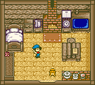
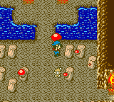

A FAZENDA
Na sua fazenda você tem quatro estabelecimentos para acessar. Sua casa, o celeiro, o galinheiro e a casa de ferramentas.
Sua Casa
Quando você começa seu trabalho na fazenda, sua casa é bem pequena. Depois de um tempo você terá bastante madeira para aumentar sua casa no Carpinteiro da aldeia. A casa sempre terá uma cama, TV, relógio, mesa e uma caixa de flores.
A cama é claro é onde você dorme a noite! A TV mostra o clima do dia seguinte se você liga-la (aperte "A" na frente da TV) e o relógio mostratá a você a data atual. A mesa tem uma caderneta em cima dela onde você pode ver o sumário dos seus animais
que você tem e quanto comida você tem para eles. A caixa de flores está vazia quando você começa o jogo, mas quando você encontra as Power Berries(Super Bagas) você verá uma pequena flor no seu vaso. Quanto mais bagas você encontrar, mais flores tera no vaso.
Há também um telefone branco que você pode usar para chamar a central da fazenda quando você quiser trocar com um amigo com seus GameBoys.
Celeiro
O próximo estabelecimento a leste é onde ficam suas vacas. Mais informação pode ser encontrado na seção das vacas. Há cinco caixas para alimentação dentro do celeiro; quatro para suas vacas e uma extra para vacas grávidas que você pode ter.
Entre o celeiro e o galinheiro está o Silo. A placa do lado de fora mostra quantas forragens você tem. Forragem vem da grama que você corta com sua foice.
Galinheiro
Por dentro é menor do que o Celeiro, mas ainda sim cabe quatro animais. Você não pode passar por cima das galinhas infelizmente e elas estão sempre no caminhho quando você tenta alimenta-las. Pegando as galinhas e colocando-as perto da porta irá te ajudar.
Você pode achar mais informação na seção galinhas.
Cabana de ferramentas
A cabana é onde está armazenado todas as suas ferramentas. Para pegar uma ferramenta, apenas caminha para cima dela e aperte "A". Você só pode ter 2 ferramentes equipadas ao mesmo tempo então aperte "START" para alternar entre as ferramentas e sua mão vazia.
Você não pode desequipar uma ferramentar mas se você pegar uma nova você colocará a antiga de volta na estante automaticamente. No canto superior esquerdo da cabana está a caderneta onde você pode ver a quantidade de uma plantação em particular que você tem. Não esqueça da porta dos fundos da cabana!

Pela portas dos fundos você encontrará a caverna dos Duendes da Colheita. Três espiritos vivem lá dentro. A caverna tem saida para o oeste, norte e leste. A saida do Oeste leva você para a mina, no qual você pode esmagar rochas quando você tiver ganho a Picareta de seu avô. A saida do norte leva você ao lago da Deusa da Colheita onde você pode pescar quando tiver recebido a vara de pescar.
A saida oeste é onde você encontrará as Fontes Termais. Se você estiver esgotado do trabalho, você pode pular e sair das fontes termais umas duas vezes e você estará como novo!
Desde que você não pode trazer nenhum produto para dentro da caverna, você terá que dar aos duendes um cogumelo que cresce dentro da caverna. Dando cogumelos vocês serão amigos. Quanto melhor a amizade com eles, melhor será quando você ativar o recurso do TEMPORIZADOR do seu jogo.
Quando você aperta "SELECT", a data e o tempo aparecerão em baixo da sua tela. Apertando "SELECT" novamente mostrará um menu adicional onde você pode assobiar para seu pet ou cavalo. Há também o recurso de Memo que fará uma imagem da sua ferramenta atual que você equipou apareça quando você aperta "SELECT" (ao invés de mostrar quanto dinheiro você tem).
A última opção é o Temporizador. Usando o Temporizador irá forçar os Duendes da Colheita a trabalhar em sua fazenda enquanto seu GameBoy estiver desligado! Mesmo se você não está jogando o jogo, os Duendes regarão suas plantações pra você.
Tome cuidado ao usar o Temporizador/TIMER. Desde que só há um jeito de ter os Duendes trabalhando em um aprimoramento da sua Foice ou Enxada, você terá que usa-lá em algum ponto. Apenas não esqueça que você ligou o temporizador! Eu cometi o erro de esquecer e tive que ligar o temporizador no Verão para ter minha Foice aprimorada para a Foice Dourada.
Uma semana depois eu liguei meu jogo de volta, só descobri que os Duendes trabalhou durante o Verão, Outono e no último dia do Inverno. Vovô estava bem ali esperando dar minha avaliação! Eu não tinha jogado durante o Outono e Inverno e assim eu não entreguei nenhuma plantação por que que os Duendes não plantam sementes pra você. Liguei o temporizador na tentativa de se tornar um Fazendeiro Mestre, mas
foi minha culpa por que eu esqueci que eu tinha que liga-lo.
O Temporizador não desliga quando você continua o seu jogo, assim certifique-se que você pressionou "SELECT" duas vezes e desligue-o quando você terminar de usa-lo.